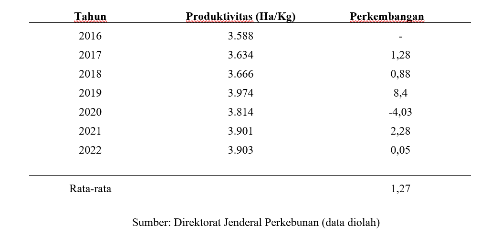
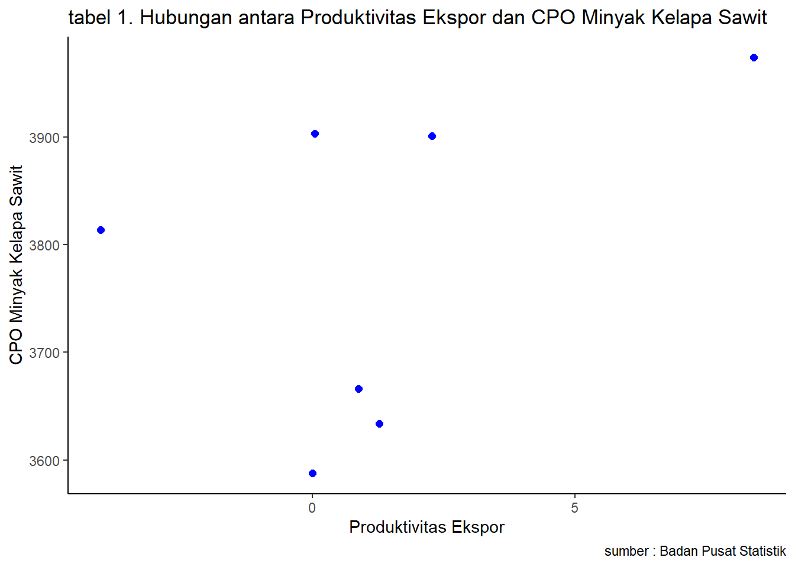

library("tidyverse")
library("readxl")
library("dplyr")Pengaruh Produktivitas Ekspor Pada CPO Minyak Kelapa Sawit Di Indonesia Tahun 2016-2022
Metode Penelitian Politeknik APP Jakarta

0.1 Pendahuluan
0.2 Latar belakang
Ekspor adalah merupakan sebuah kegiatan komersial yang melibatkan pengiriman barang dari dalam negeri ke negara lain.Di Negara Indonesia memiliki sektor perkebunan terbesar terutama untuk di bidang ekspor CPO minyak kelapa sawit yang merupakan perkebunan Indonesia dan mempunyai peranan yang sangat penting dalam pertumbuhan perekonomian di Indonesia.Pertumbuhan perekonomian di Indonesia ditopang oleh perkembangan industri CPO minyak kelapa sawit yang berkembang pesat.Hal ini disebabkan oleh meningkatnya suatu produksi CPO minyak sawit sebagai respons terhadap tingginya permintaan untuk memenuhi kebutuhan penduduk.CPO minyak kelapa sawit yang merupakan bahan baku utama perkebunan di Indonesia dapat diolah menjadi minyak sawit (CPO) dan minyak inti sawit (PKO).Tanaman kelapa sawit ini berasal dari Afrika Barat, namun tanaman kelapa sawit juga tumbuh subur di luar kawasan, antara lain Indonesia, Malaysia, Thailand, Kolombia,dan Nigeria.
Menurut badan penelitian statistik atau BPS 2019 Indonesia,Indonesia masih menjadi negara penghasil kelapa sawit terbesar di dunia, dan yang menempati posisi kedua yaitu Malaysia. Pada tahun 2017 produksi kelapa sawit mengalami peningkatan yang sangat pesat dengan jumlah sebesar 37.965.224 ton.Walaupun sempat mengalami sebuah penurunan pada tahun 2020 menjadi 45.741.845 ton. Sedangkan pada tahun 2022, jumlahnya meningkat menjadi 48.235.405 ton. Selain dengan produksi perkembangan luas di area perkebunan kelapa sawit di Indonesia meningkat. Hal tersebut menyebabkan perkembangan produktivitas CPO kelapa sawit di Indonesia mengalami peningkatan dari tahun ke tahun. Walaupun pada 2020 mengalami sebuah penurunan yang dikarenakan terjadinya virus covid-19 yang mengakibatkan satu dunia mengalami akan penurunan dibeberapa sektor kelapa sawit di Indonesia tidak mengalami penurunan, dan untuk perkembangan produktivitas CPO kelapa sawit di Indonesia mengalami pemulihan atau kestabilan kembali pada tahun 2021.
0.3 Ruang lingkup
Pada Pembatasan akan suatu masalah jika digunakan untuk membatasi sebuah jangkauan proses yang akan dibahas pada analisis ini agar tetap dalam satu topik dan menghindari suatu pelebaran pokok suatu permasalahan. Pada peneliti ini menetapkan batasan masalah dalam beberapa hal, yaitu dengan membahas terkait nya produktivitas, dan luas lahan CPO minyak kelapa sawit di Indonesia.
0.4 Rumusan masalah
Berdasarkan pada latar belakang masalah yang telah dijelaskan di atas, maka rumusan masalah yang dikemukakan di dalam penelitian ini adalah:
- Bagaimana perkembangan atas ketersediaan lahan untuk meningkatkan produktivitas pada CPO minyak kelapa sawit di Indonesia pada tahun 2016-2022?
- Seberapa besar berpengaruh nya ekspor CPO di Indonesia.?
- Bagaimana pengaruh perkembangan pada kuantitas CPO kelapa sawit di Indonesia untuk produktivitasnya pada tahun 2016-2022?
0.5 Tujuan dan manfaat penelitian
Pada tujuan dari sebuah penelitian ini yaitu untuk mengetahui bagaimana suatu perkembangan produktivitas dan luas dari area CPO minyak kelapa sawit di Indonesia pada tahun 2016-2022.
0.6 Package
Ini tidak wajib ada di tulisan anda tapi anda dapat menunjukkan Packages yang digunakan antara lain sebagai berikut:
1 Studi pustaka
Pada Minyak Kelapa sawit merupakan salah satu tanaman perkebunan yang mempunyai peranan penting dalam subsektor perkebunan.Pengembangan pada minyak kelapa sawit membawa manfaat seperti peningkatan pendapatan petani dan masyarakat lokal, produksi sebagai bahan baku industri pengolahan yang menghasilkan nilai tambah di dalam negeri, dan ekspor CPO yang menghasilkan devisa dan membuka lapangan kerja.
(Dirjen Perkebunan, 2014) minyak kelapa sawit merupakan salah satu bahan baku perkebunan yang memegang peranan penting dalam sektor pertanian, khususnya sektor perkebunan, karena merupakan salah satu jenis tanaman penghasil minyak yang bernilai ekonomi tinggi.Ekonomi Masyarakat (Monde, 2016). Produksi adalah suatu kegiatan yang dapat menghasilkan keuntungan baik waktu, bentuk, dan tempat untuk memenuhi kebutuhan manusia.Produksi dapat berupa barang dan jasa, namun juga diartikan sebagai suatu aktivitas yang mengubah sumber daya menjadi produk, atau suatu proses yang mengubah input menjadi output.
Menurut Hasibuan (2018: 340) Busro, produktivitas adalah perbandingan keluaran (hasil) dan masukan (input).Peningkatan produktivitas meningkatkan efisiensi (waktu, material tenaga kerja), sistem kerja, teknik produksi, dan keterampilan tenaga kerja.Menurut Dewan Produktivitas Nasional Republik Indonesia (RI), produksi dan produktivitas mempunyai dua arti yang berbeda.Peningkatan produksi berarti peningkatan output yang dicapai, dan peningkatan produktivitas berarti peningkatan output dan perbaikan metode produksi.Peningkatan output belum tentu disebabkan oleh peningkatan produktivitas, karena output dapat meningkat meskipun produktivitas tetap sama atau menurun.Data luas lahan berdasarkan data Direktorat Jenderal Kehutanan dan merupakan penjumlahan dari tiga jenis luas menurut kondisi tanaman: belum menghasilkan (TBM; tanaman belum menghasilkan), menghasilkan (TM; tanaman produktif), dan rusak.(TR; tanaman rusak).Daerah kematangan adalah luas tanaman.Areal perkebunan juga dibagi berdasarkan tanaman.yaitu Peternakan Rakyat (PR), Peternakan Besar Negara (PBN), dan Peternakan Besar Swasta (PBS).
Menurut Badan Survei dan Statistik, areal tanaman baku kelapa adalah areal yang dikelola oleh perusahaan perkebunan bahan baku kelapa dan terbagi menjadi tanaman belum menghasilkan (TBM), tanaman menghasilkan (TM), dan tanaman tidak menghasilkan yang rusak (TR/TTM).dalam hektar (Ha).
2 Metode penelitian
2.1 Data
Berikut merupakan data yang digunakan sebagai objek penelitian. Data ini meliputi Perkembangan produktivitas kelapa sawit Indonesia tahun 2016-2022

Hal ini disebabkan terganggunya akan sebuah kegiatan produksi minyak sawit di Indonesia akibat virus corona baru.Namun, hal ini tidak berlangsung lama.Pada tahun 2021 hingga 2022, nilai perkembangannya meningkat sebesar 0,05, meskipun tidak signifikan.
penelitian ini menggunakan data xxx
#import dataset
library(readxl)
dat<-read_excel('dat.xlsx')
head(dat)# A tibble: 6 × 3
Tahun PD PK
<dbl> <dbl> <dbl>
1 2016 3588 0
2 2017 3634 1.28
3 2018 3666 0.88
4 2019 3974 8.4
5 2020 3814 -4.03
6 2021 3901 2.28library("ggplot2")
library("readxl")
library("dplyr")
ggplot(data = dat,aes(x=PK,y=PD))+
geom_point(color="blue",size=2)+
labs(title="tabel 1. Hubungan antara Produktivitas Ekspor dan CPO Minyak Kelapa Sawit",
x="Produktivitas Ekspor",
y="CPO Minyak Kelapa Sawit",
caption = "sumber : Badan Pusat Statistik")+
theme_classic()
2.2 Metode analisis
Metode analisis yang digunakan dalam penelitian ini menggunakan metode pengumpulan data sekunder.Data untuk analisis penelitian ini dikumpulkan secara sistematis berupa data time series periode 2016-2022.Penelitian ini menggunakan metode analisis kuantitatif atau pengolahan data dengan mempertimbangkan perkembangan produktivitas, produksi dan luas kelapa sawit di Indonesia.Selain menggunakan metode kuantitatif,penelitian ini juga menggunakan deskripsi deskriptif. Metode yang dipilihdalam penelitian ini adalah
menggunakan regresi multivariat dengan dua variabel independen yaitu produksi dan luas lahan. Spesifikasi yang dilakukan adalah:
0 + 𝛽1X+ β2S+ μ
Keterangan:
Y = Produktivitas kelapa sawit
0 = Konstanta
1 = Konstanta produksi
2 = Konstanta luas areal
X = Produksi
S = Luas areal
μ = error term
3 Pembahasan
3.1 Pembahasan masalah
4.1 Pembahasan Masalah
Karena dengan ini menggunakan hasil dari data panel, maka Langkah yang pertama-tama kita perlu lakukan adalah dengan memilih model regresi yang akan digunakan.Dalam hal ini, gunakan uji Chow untuk memutuskan metode mana yang akan digunakan antara model gabungan dan model tetap, bergantung pada hasil H0 dan H1 yang ditampilkan.
#import dataset
library(readxl)
dat<-read_excel('dat.xlsx')
head(dat)# A tibble: 6 × 3
Tahun PD PK
<dbl> <dbl> <dbl>
1 2016 3588 0
2 2017 3634 1.28
3 2018 3666 0.88
4 2019 3974 8.4
5 2020 3814 -4.03
6 2021 3901 2.283.2 Analisis masalah
Hasil regresinya adalah
reg1<-lm(PK~PD,data=dat)
summary(reg1)
Call:
lm(formula = PK ~ PD, data = dat)
Residuals:
1 2 3 4 5 6 7
0.7739 1.5724 0.8375 5.1335 -5.6217 -0.2224 -2.4733
Coefficients:
Estimate Std. Error t value Pr(>|t|)
(Intercept) -38.33097 37.32426 -1.027 0.352
PD 0.01047 0.00986 1.062 0.337
Residual standard error: 3.685 on 5 degrees of freedom
Multiple R-squared: 0.1839, Adjusted R-squared: 0.02073
F-statistic: 1.127 on 1 and 5 DF, p-value: 0.3374 Kesimpulan
Berdasarkan pada hasil data penelitian di atas, terbukti bahwa produksi mempengaruhi suatu produktivitas seperti halnya pada luas wilayah. Sebagai wilayah CPO minyak kelapa sawit Indonesia, produksi dan permintaannya sangat besar, sehingga hasil dari sebuah produktivitas pun akan semakin meningkat. Hasil data Tabel 1 dan 2 menunjukkan bahwa hasil produksi CPO minyak kelapa sawit mengalami sebuah penurunan pada tahun 2020, dan volume produksi mempengaruhi produktivitas kelapa sawit itu sendiri.
Berdasarkan hasil data pada regresi.Hasil regresi di atas diperoleh dari X (produksi) berpengaruh terhadap produktivitas, namun Y (luas area) tidak berpengaruh terhadap produktivitas.Namun hasil dari regresi menunjukkan bahwa produktivitas positif mempunyai pengaruh yang signifikan terhadap X dan Y.
5 Referensi
http://journal.unair.ac.id/download-fullpapers-ln7521382ab9full.pdf
https://www.indonesia-investments.com/id/bisnis/komoditas/minyak-sawit/item166
https://jurnal.kemendag.go.id/bilp/article/download/104/69/
https://jurnal.peneliti.net/index.php/JIWP/article/download/5343/4429/